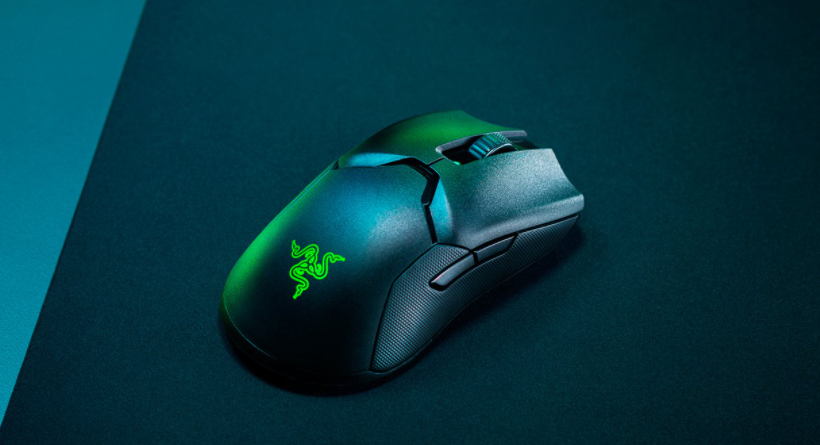

Razer Viper Ultimate
| FORM FACTOR | CONNECTIVITY | BATTERY LIFE | RGB LIGHTING | SENSOR | MAX SENSITIVITY (DPI) |
|---|---|---|---|---|---|
| True-Ambidextrous |
|
Up to 70 Hours | Razer Chroma™ RGB | Optical | 20000 |
| MAX SPEED (IPS) | MAX ACCELERATION (G) | PROGRAMMABLE BUTTONS | SWITCH TYPE | SWITCH LIFECYCLE | ON-BOARD MEMORY PROFILES |
| 650 | 50 | 8 | Optical | 70 Million Clicks | 5 |
| MOUSE FEET | CABLE | TILT SCROLL WHEEL | SIZES | WEIGHT | DOCK COMPATIBILITY |
| 100% PTFE Mouse feet | No | No | Length x Grip Width x Height
|
0.16 lbs / 74 g | Yes |
Razer Orochi V2

| FORM FACTOR | CONNECTIVITY | BATTERY LIFE | RGB LIGHTING | SENSOR | MAX SENSITIVITY (DPI) |
|---|---|---|---|---|---|
| Symmetrical right-handed | Dual-mode wireless (2.4GHz and BLE) | Up to 425 hours (2.4Ghz), 950 hours (BLE) with included Lithium AA battery | No | Optical | 18000 |
| MAX SPEED (IPS) | MAX ACCELERATION (G) | PROGRAMMABLE BUTTONS | SWITCH TYPE | SWITCH LIFECYCLE | ON-BOARD MEMORY PROFILES |
| 450 | 40 | 6 | 2nd-gen Razer™ Mechanical Mouse Switches | 60 Million Clicks | 1 |
| MOUSE FEET | CABLE | TILT SCROLL WHEEL | SIZES | WEIGHT | DOCK COMPATIBILITY |
| Undyed PTFE mouse-feet | No | No |
|
< 60 g / < 2.2 oz (mass centralized) | No |
Razer Deathadder V2 Mini
| FORM FACTOR | CONNECTIVITY | BATTERY LIFE | RGB LIGHTING | SENSOR | MAX SENSITIVITY (DPI) |
|---|---|---|---|---|---|
| Right-Handed | Wired - Razer™ Speedflex Cable | None | Razer Chroma™ RGB | Optical | 8500 |
| MAX SPEED (IPS) | MAX ACCELERATION (G) | PROGRAMMABLE BUTTONS | SWITCH TYPE | SWITCH LIFECYCLE | ON-BOARD MEMORY PROFILES |
| 300 | 35 | 6 | Optical | 70 Million Clicks | 1 |
| MOUSE FEET | CABLE | TILT SCROLL WHEEL | SIZES | WEIGHT | DOCK COMPATIBILITY |
| 100% PTFE Mouse Feet | Razer™ Speedflex Cable | No | Length x Grip Width x Height
|
0.14 lbs / 62 g (Excluding cable) | No |